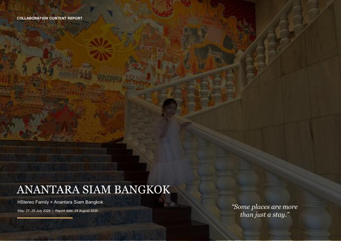
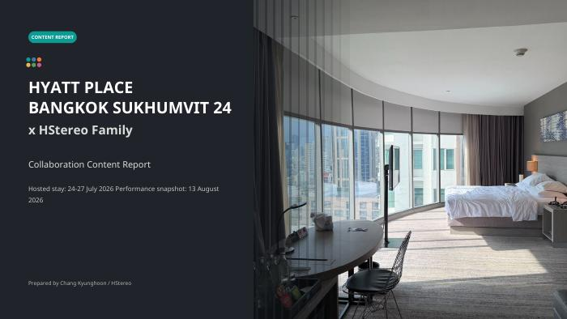
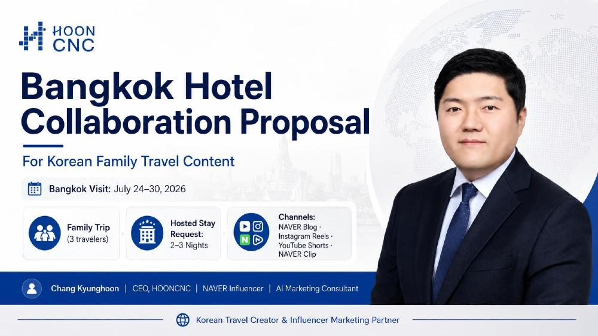
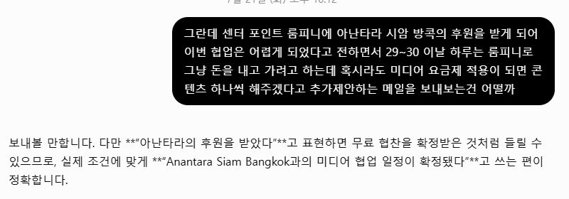
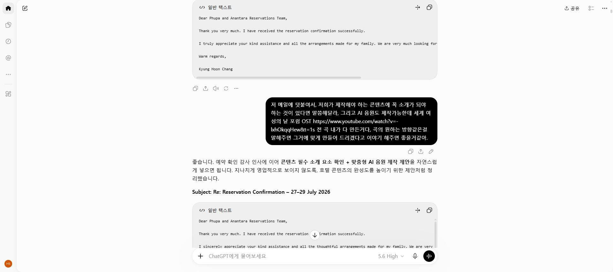

내 채널이 줄 수 있는 가치
영문 제안서에 채널 소개, 여행 계획, 협업 범위와 콘텐츠 납품 계획을 담았습니다. 과거 리조트 사례를 함께 제시해 제안의 근거를 만들었습니다.
인플루언서의 방콕 호텔 협업을 통해 살펴보는 ChatGPT 활용 사례. 영문 제안서와 실제 콘텐츠, 협업 결과 보고서를 한곳에 모았습니다.


가족여행 콘텐츠의 강점과 호텔이 기대하는 한국 시장 노출을 연결했습니다. 이 페이지는 제안과 실행, 보고를 따라가며 실제 산출물을 확인할 수 있도록 구성했습니다.
영문 제안서에 채널 소개, 여행 계획, 협업 범위와 콘텐츠 납품 계획을 담았습니다. 과거 리조트 사례를 함께 제시해 제안의 근거를 만들었습니다.
하얏트 플레이스는 가족여행의 실용성과 한국어·영어 콘텐츠를, 아난타라 시암은 태국의 문화와 가족의 경험을 중심에 두었습니다. 현장 촬영과 경험은 창작자가 직접 수행했습니다.
발행 링크와 QR, 초기 성과, AI 보조 음악을 보고서로 정리했습니다. 이후 대화에서는 협업 결과 보고서를 다음 제안에 활용하는 영문 메일 초안을 작성했습니다.
발표자가 제공한 PDF 원본 3개입니다. 표지나 버튼을 누르면 문서가 열립니다. 보고서에 포함된 콘텐츠 링크와 QR로 실제 발행물을 확인할 수 있습니다.

크리에이터 소개부터 협업 범위, 콘텐츠 구성, 기존 사례까지 담은 영문 제안서.
제안서 PDF 열기 ↗2026.7.24–27 협업. 발행 콘텐츠 8개, 한국어·영어 숏폼, AI 보조 음악 3곡과 초기 성과.
하얏트 보고서 열기 ↗2026.7.27–29 협업. 발행 콘텐츠 6개, 문화와 가족 중심 스토리텔링, AI 보조 음악 2곡.
아난타라 보고서 열기 ↗수치는 각 보고서에 기록된 초기 성과입니다. 서로 다른 날짜의 조회수이며, 현재 누적 성과나 고유 시청자 수를 의미하지 않습니다.
릴스 좋아요 262 · 저장 17
한국어 콘텐츠와 영어 콘텐츠의 메시지를 각각 구성.
블로그 2,129회 + 릴스 1,730회
릴스 상호작용 51 · 저장 11 · 공유 8.
출처: 위 두 협업 결과 보고서. 유튜브 쇼츠·네이버 클립은 보고서 작성 직전 게시되어 당시 성과 집계에서 제외됐습니다. AI 음악의 사용 도구는 보고서에 특정되지 않아 ChatGPT 또는 OpenAI의 음악 생성 성과로 표현하지 않습니다.
ChatGPT 대화 「인플루언서 시딩 제안」의 실제 화면을 발췌한 자료입니다. 메일 초안은 작성 과정의 기록이며, 발송이나 계약 체결을 증명하는 자료는 아닙니다.
사용자가 아난타라 협업 소식을 다른 호텔에 어떻게 전할지 묻자, ChatGPT는 무료 협찬으로 오해될 수 있는 표현 대신 실제 조건에 맞춘 미디어 협업 표현을 제안했습니다. 맥락을 전달하고 문구를 검토하는 실제 작업 장면입니다.
핵심은 ‘AI가 무엇을 썼는가’와 함께, ‘내가 어떤 맥락과 판단을 제공했는가’를 보여주는 것입니다.
이 페이지에서 제안하는 발표 관점입니다. 원본 대화와 PDF를 구분해 제시해, 실제 산출물과 작성 과정을 함께 살펴볼 수 있도록 했습니다.

호텔이 꼭 소개하고 싶은 요소를 먼저 묻고, 원하는 분위기에 맞춘 AI 보조 음악을 추가로 제안했습니다. ChatGPT는 이 의도를 영문 메일 초안으로 정리했습니다.
이 제안은 이후 보고서에 정리된 현장 콘텐츠 및 음악 결과물과 함께 살펴볼 수 있습니다.

PDF는 발표자가 제공한 원본이며, 본 페이지의 설명은 이를 바탕으로 정리했습니다. 캡처는 해당 ChatGPT 대화의 일부이며 전체 대화를 대체하지 않습니다. 확인되지 않은 비용 절감, 매출 전환, 계약 성사 수치는 포함하지 않았습니다. Codex는 이번 참고 페이지 제작에 사용되었으며, 과거 호텔 협업에서 사용됐다고 소급해 표현하지 않습니다.
협업의 출발점은 창작자가 가진 경험과 콘텐츠입니다. AI와의 대화를 통해 그 가치를 제안으로 표현하고, 실행한 결과를 다시 다음 협업의 근거로 정리하는 과정을 공유하고자 합니다.